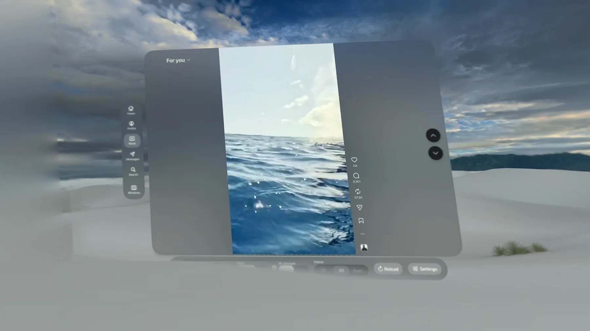
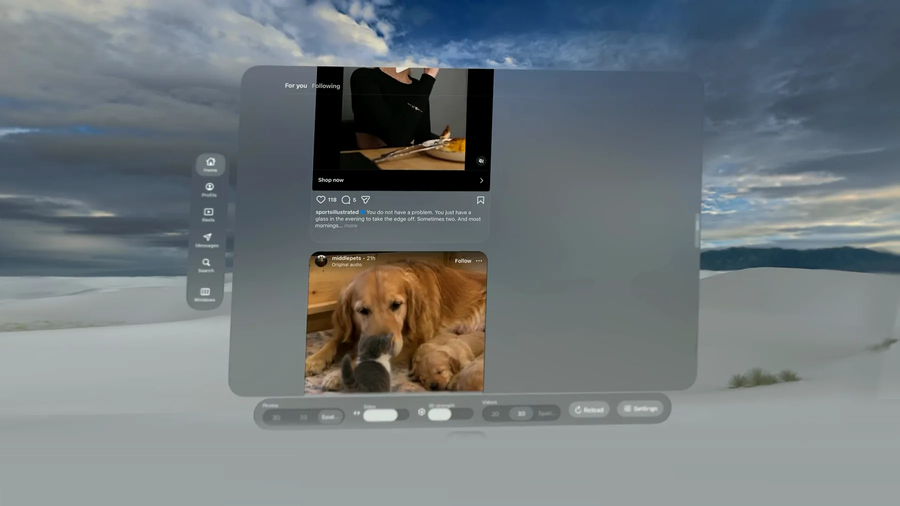
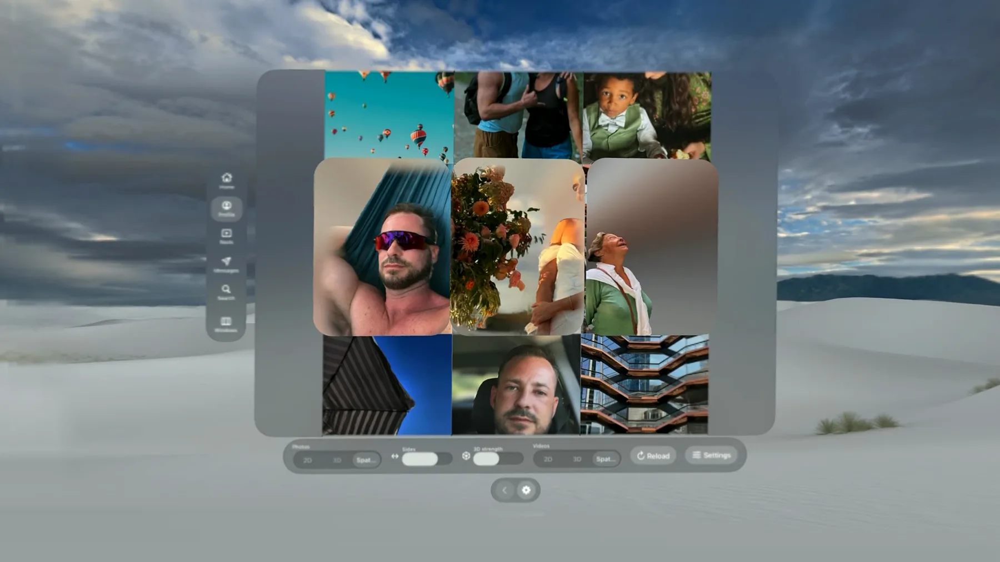

2D, 3D or Spatial
Switch every photo with one tap, and choose how strong the 3D feels with a simple slider.
Social Spatial 3D
The immersive way to view your Instagram photos and videos on Apple Vision Pro. Every photo and video is converted from 2D to 3D or Spatial in real time, entirely on your device.
Your own feed, profiles and messages, in a native visionOS window. Tap once, and every photo gains real depth.
Features
Switch every photo with one tap, and choose how strong the 3D feels with a simple slider.
Launch it from your Home View. A native window and controls, not a browser look.
Your feed, profiles, Reels and direct messages work as usual, with Reload and Settings always within reach.
No account, no analytics, no tracking. You sign in on Instagram's own page, and the 3D conversion never leaves your Vision Pro.



